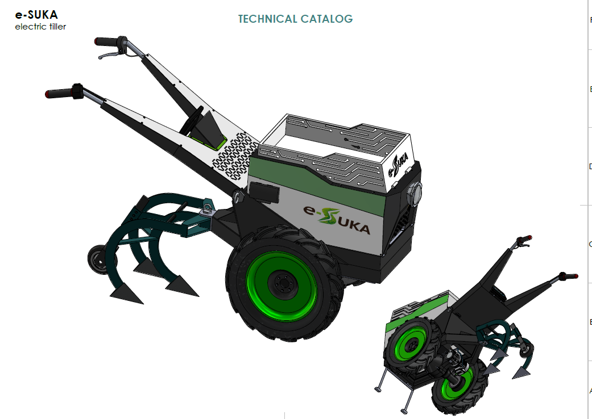
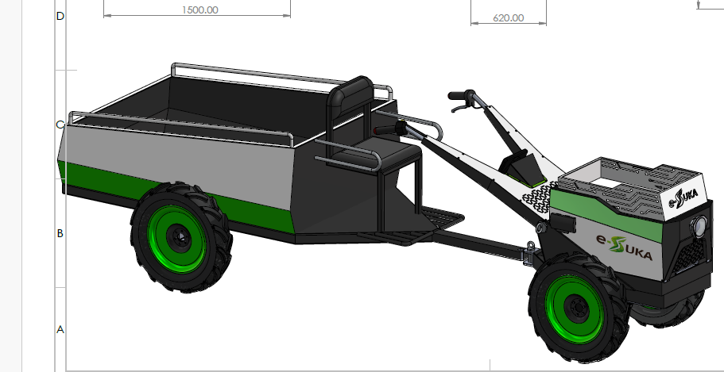
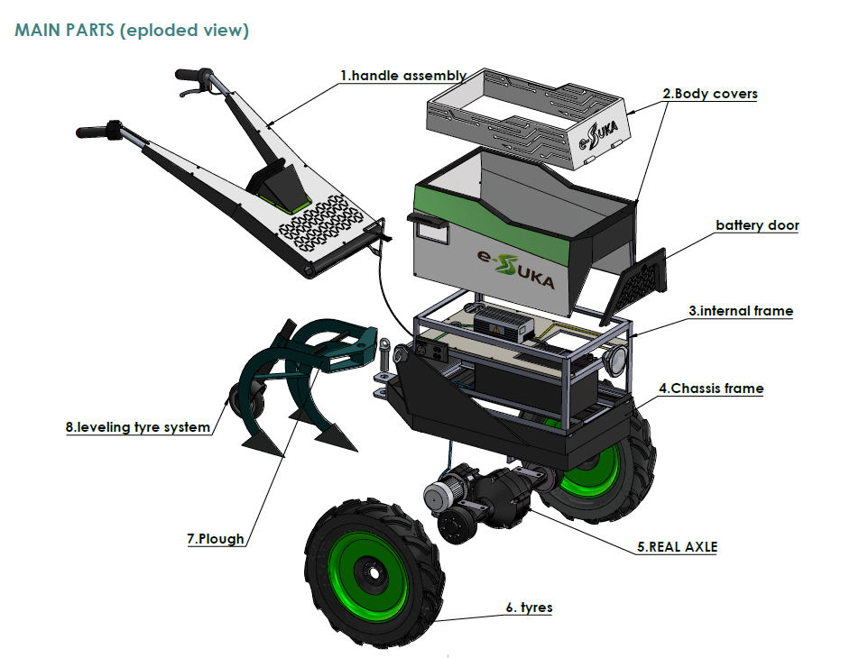
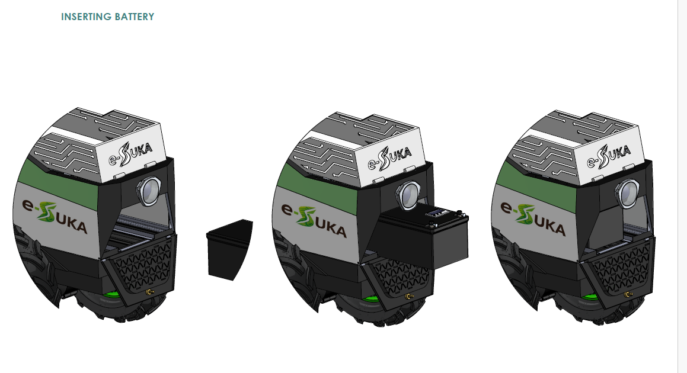

The first electric tiller engineered from the ground up for Rwanda's volcanic slopes, smallholder plots, and the real economics of African farming.
The e-SUKA is a locally engineered electric tiller designed specifically for the terrain, economics, and conditions of Rwandan smallholder farming. Every component — from the levelling tyre system to the swappable battery — was designed by field research, not assumptions.
Unlike imported machines built for flat European fields, the e-SUKA handles 30° volcanic terraces, fits narrow plot rows, and generates income beyond tilling through its modular transport and energy platform.
The e-SUKA is more than a tiller. It is a modular platform capable of switching between three modes of operation — each generating revenue for the smallholder farmer.
Engineered using DFMA (Design for Manufacturing and Assembly) principles, every part is locally sourceable, locally serviceable, and locally manufacturable.

In rural Rwanda, getting crops from the farm to the market is one of the biggest unsolved challenges. Roads are steep and unpaved. Manual porterage costs time, money, and physical health. Hired trucks are unaffordable for most smallholders.
The e-SUKA transport extension turns the tiller into a cargo vehicle — the same machine that works your land in the morning carries your harvest to market in the afternoon. One investment. Two revenue streams.
Up to 30% of crops are lost before reaching market due to lack of affordable transport and long carry times on foot.
Motorcycles can't carry volume. Trucks are too expensive. Farmers are left carrying 50kg loads on their backs down mountain paths.
A farmer who can't move produce fast loses negotiating power at market — forced to sell at low prices or let crops spoil.
The cargo trailer extension attaches in minutes. 1,500mm bed, 620mm width — built to navigate Rwanda's narrow farm tracks.

8 core assemblies, all engineered for local manufacturing, local maintenance, and long-term field reliability.

The e-SUKA's battery is designed for fast field-side swapping. When one battery depletes, the farmer swaps to a charged unit in under a minute — no tools required. The depleted battery charges while work continues.

The side-access battery door opens without tools. Designed for one-hand operation even while wearing farming gloves.
The battery slides into the chassis frame on guide rails. A single click confirms secure contact with the power terminals.
The e-SUKA powers on automatically. Full charge indicator on the handlebar display confirms capacity before the next plot.
Partner with Living Lab Rwanda — for demos, distribution, or R&D collaboration.